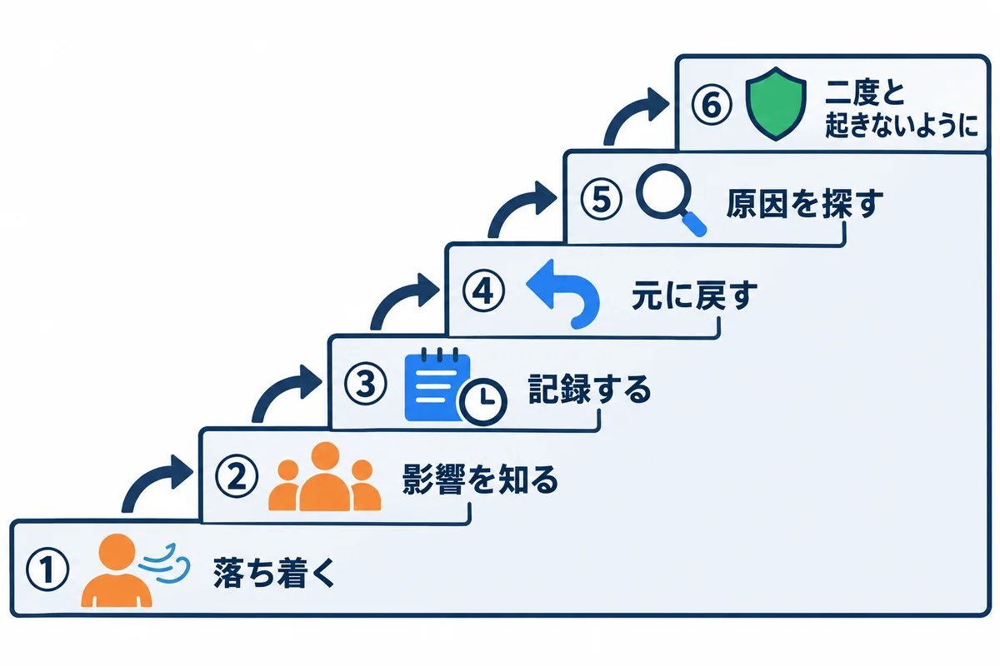
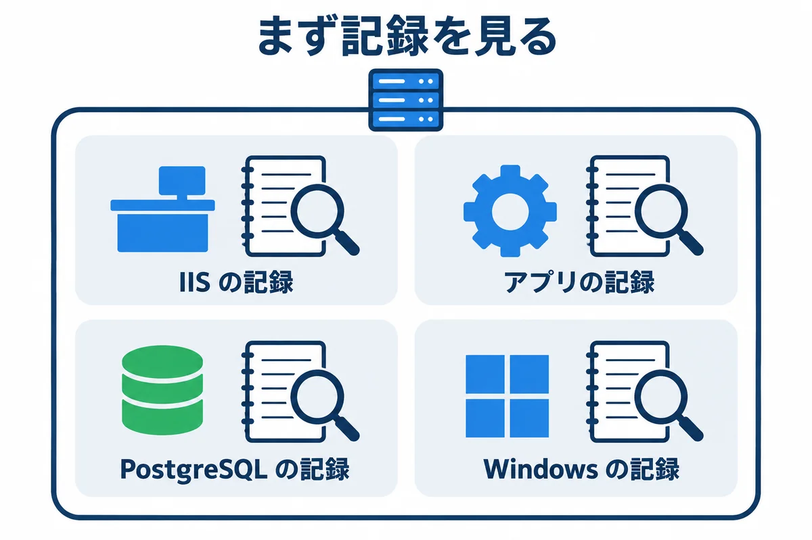
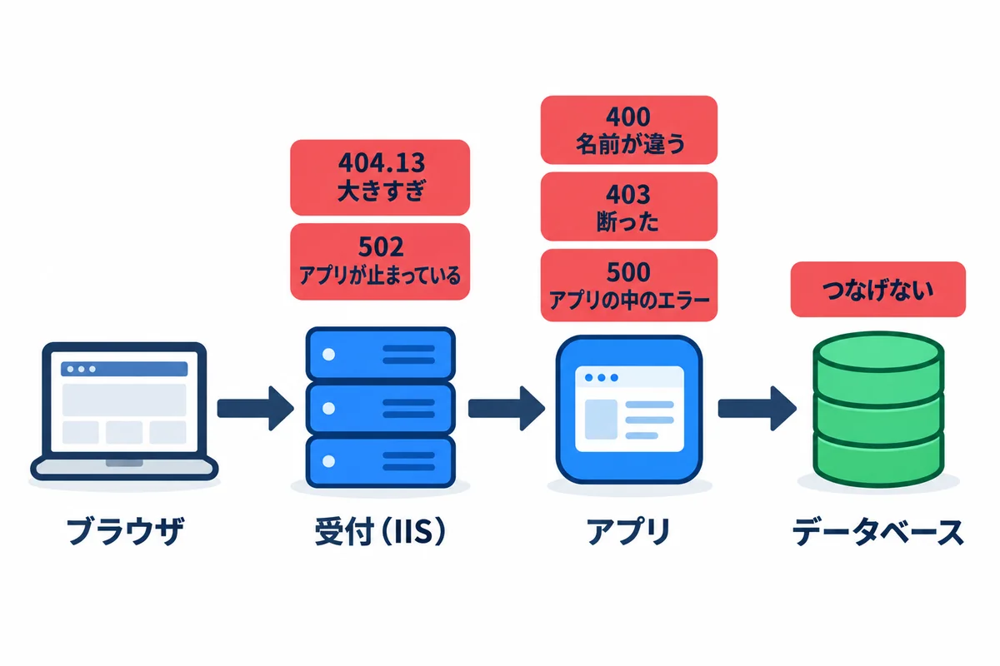
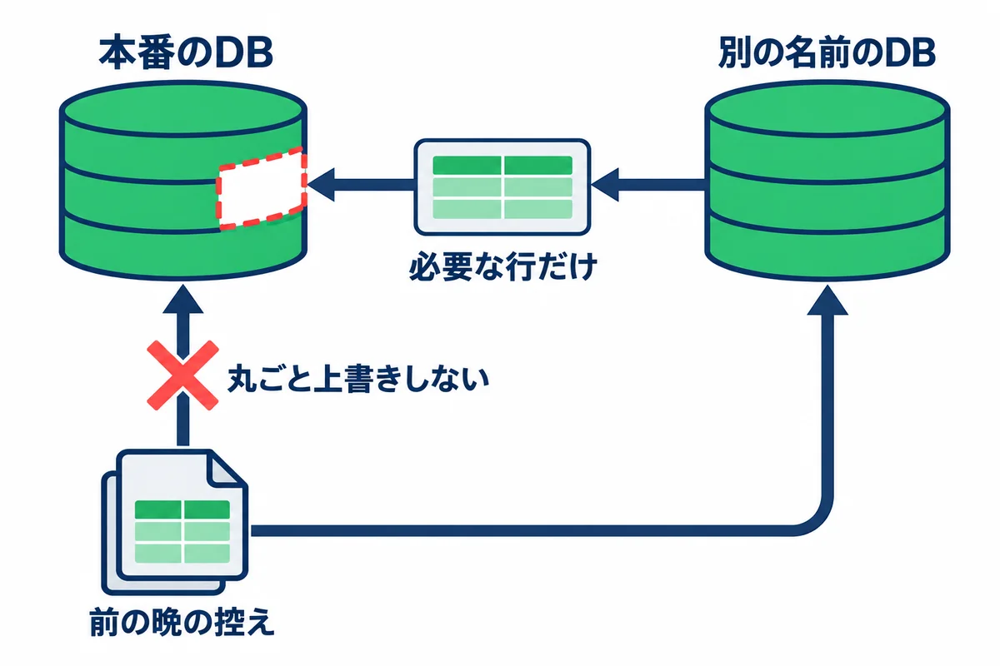
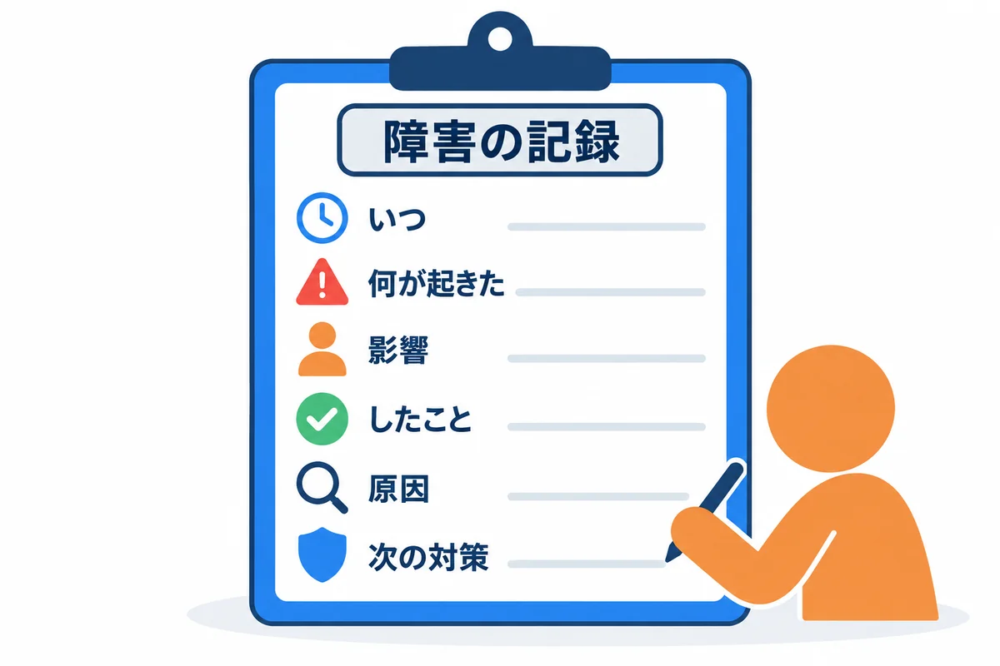

色の付いた枠のコードの、右上の「コピー」ボタンを押してください。コピーしたら、PDF を見ていた画面に戻ります（ブラウザーで PDF を見ていた時は「戻る」、VS Code で見ていた時は VS Code の窓に切り替えます）。
「画面が開かない」「遅い」「メールが届かない」と言われたときに、落ち着いて、順番に調べて、直すための資料です。

| 順 | すること | 具体的には |
|---|---|---|
| ① | 落ち着く | 慌てて設定を次々に変えると、何が効いたか分からなくなり、かえって壊す。まず 1 分、状況を見る |
| ② | 影響を知る | 全員か、一部の人か。本番か、検証か。いつからか。何ができないのか（全部か、一部の画面か） |
| ③ | 記録する | 気付いた時刻、症状、エラーの文（画面の写し）、自分がしたことを、時刻付きでメモする（6 章の形） |
| ④ | 元に戻す | 直前に更新・設定の変更をしていたら、まず元に戻す（切り戻し。04 の 13.4・05 の 13.3）。原因を探すのは、使える状態に戻してから |
| ⑤ | 原因を探す | 2〜4 章の順で調べる |
| ⑥ | 二度と起きないように | 手順書・点検・監視を直す。同じ失敗をしないための仕組みにする |
大事な考え方: トラブルの多くは、直前に何かを変えたことがきっかけです。「最後に何を変えたか」（更新・設定・Windows Update・パスワードの変更・ディスクの拡張など）を、最初に思い出します。
連絡の目安:
| こんなとき | 連絡する相手 |
|---|---|
| 本番が使えず、15 分で直る見込みが無い | 利用者（社員）に「使えない・いつ頃直るか未定」を知らせる。上司にも知らせる |
| サーバーが落ちた・つながらない（リモート デスクトップも入れない） | 情報システム部門（仮想マシンの基盤の確認） |
| ネットワーク・DNS・メールの道（コネクタ）が原因らしい | 情報システム部門 |
| データが消えた・おかしい | 上司。勝手に戻さず、どこまで戻すかを決めてもらう（5.12） |
お願いは、社員のパソコン → 名前（DNS）→ ネットワーク → 受付（IIS）→ アプリ → データベース の順に進みます（00 基礎知識 4.6）。どこで止まっているかを、手前から順に確かめると、早く原因にたどり着けます。
| 順 | 確かめること | どこで打つか | コマンド | 正しいとき |
|---|---|---|---|---|
| ① | 名前が引けるか | 社員のパソコン | Resolve-DnsName webapp.example.local |
サーバーの IP アドレスが出る |
| ② | 80 番につながるか | 社員のパソコン | Test-NetConnection webapp.example.local -Port 80 |
TcpTestSucceeded : True |
| ③ | 受付（IIS）が返事をするか | サーバー | Invoke-WebRequest http://127.0.0.1/health -UseBasicParsing -Headers @{ Host = "webapp.example.local" } |
StatusCode が 200 |
| ④ | アプリが返事をするか | サーバー | Invoke-WebRequest http://127.0.0.1:8080/health -UseBasicParsing -Headers @{ Host = "webapp.example.local" } |
StatusCode が 200 |
| ⑤ | データベースにつながるか | サーバー | psql -h 127.0.0.1 -U webapp_prod_app -d webapp_prod -c "SELECT 1;" |
1 が出る |
-Headers @{ Host = ... } を付けるのは、社員のブラウザと同じ名前でお願いするためです（Django 版は、付けないと 400 になる。05 の 8.4）。①〜⑤ のうち、サーバーの中で確かめられる物と、ディスクとバックアップを、まとめて確かめるスクリプトです。D:\webapp\tools\check.ps1 に置いておき、毎朝の点検と、トラブルのときの最初の一手に使います。
# D:\webapp\tools\check.ps1（必ず「UTF-8 (BOM 付き)」で保存する）
# 受付からデータベースまでを順に確かめて、OK / NG を表示する
# 使い方: .\check.ps1 （本番）
# .\check.ps1 -Env stg （検証）
param(
[ValidateSet("prod", "stg")] [string] $Env = "prod"
)
$targets = @{
prod = @{ Name = "webapp.example.local"; Port = 8080; Service = "webapp-prod" }
stg = @{ Name = "webapp-stg.example.local"; Port = 8081; Service = "webapp-stg" }
}
$t = $targets[$Env]
function Show-Result($label, $ok, $detail) {
$mark = if ($ok) { "OK" } else { "NG" }
"{0} {1} {2}" -f $mark, $label, $detail
}
# 1. サービスが動いているか
foreach ($svc in @("postgresql-x64-18", "W3SVC", $t.Service)) {
$s = Get-Service -Name $svc -ErrorAction SilentlyContinue
$detail = if ($s) { $s.Status } else { "登録されていない" }
Show-Result "サービス $svc" ($s -and $s.Status -eq "Running") $detail
}
# 2. ポートで待ち受けているか
foreach ($port in @(80, $t.Port, 5432)) {
$l = Get-NetTCPConnection -State Listen -LocalPort $port -ErrorAction SilentlyContinue
Show-Result "待ち受け $port" ([bool]$l) ((@($l.LocalAddress) | Sort-Object -Unique) -join ",")
}
# 3. アプリに直接聞く（IIS を通さない）
try {
$r = Invoke-WebRequest "http://127.0.0.1:$($t.Port)/health" -UseBasicParsing -TimeoutSec 10 -Headers @{ Host = $t.Name }
Show-Result "アプリ /health" ($r.StatusCode -eq 200) $r.StatusCode
} catch {
Show-Result "アプリ /health" $false $_.Exception.Message
}
# 4. IIS を通して聞く（社員と同じ道）
try {
$r = Invoke-WebRequest "http://127.0.0.1/health" -UseBasicParsing -TimeoutSec 10 -Headers @{ Host = $t.Name }
Show-Result "IIS 経由 /health" ($r.StatusCode -eq 200) $r.StatusCode
} catch {
Show-Result "IIS 経由 /health" $false $_.Exception.Message
}
# 5. ディスクの空き（2 割を切ったら NG）
foreach ($v in Get-Volume | Where-Object { $_.DriveLetter -in "C", "D" }) {
$free = [int](100 * $v.SizeRemaining / $v.Size)
Show-Result "ディスク $($v.DriveLetter): の空き" ($free -ge 20) "$free %"
}
# 6. 最後のデータベースの控えが、26 時間以内か
$last = Get-ChildItem D:\webapp\backup\db -Filter "webapp_prod_*.dump" -ErrorAction SilentlyContinue |
Sort-Object LastWriteTime -Descending | Select-Object -First 1
$detail = if ($last) { $last.LastWriteTime.ToString("yyyy-MM-dd HH:mm") } else { "無い" }
Show-Result "最後の DB の控え" ($last -and $last.LastWriteTime -gt (Get-Date).AddHours(-26)) $detail
▶ ここで初めて出てくるコード
function（PowerShell）: PowerShell で、自分の関数を作る書き方。function New-LfFile($Path, $Lines) { … }と書くと、New-LfFileをコマンドのように呼べます。else（PowerShell）:if (条件) { … } else { … }の、条件に合わなかった時の所。elseif (条件)で、条件をつなげられます。Get-Service -ErrorAction（PowerShell）:Get-Serviceで、エラーが起きた時の動きを決めるオプション。-ErrorAction SilentlyContinueは「そのサービスが無くても、赤いエラーを出さずに進む」。-and（PowerShell）: 「かつ」（両方ともTrueの時だけTrue）。$a -gt 0 -and $b -gt 0のように、条件をつなぎます。Get-NetTCPConnection -ErrorAction（PowerShell）: エラーが起きた時の動きを決めるオプション。待ち受けが無い時に出るエラーを、-ErrorAction SilentlyContinueで黙らせます。Sort-Object -Unique（PowerShell）: 並べかえたうえで、同じ物を 1 つにまとめるオプション。Invoke-WebRequest -TimeoutSec（PowerShell）: 答えを待つ時間の上限（秒）を決めるオプション。過ぎたらエラーにして、いつまでも止まらないようにします。-gt（PowerShell）: PowerShell の「より大きい」の比べ方（greater than）。$failed -gt 0は「失敗が 1 つ以上あるか」。
# 管理者の PowerShell で
cd D:\webapp\tools
.\check.ps1 # 本番
.\check.ps1 -Env stg # 検証
▶ ここで初めて出てくるコード
.\check.ps1（PowerShell）: 今いるフォルダのcheck.ps1（この資料で作る、サービス・待ち受け・応答・控えなどを、まとめて確かめるスクリプト）を動かす書き方。
確かめること: 全部の行の頭が OK であること。NG の行があれば、その行の項目から 5 章の症状を探します。
| NG の行 | 読み方 |
|---|---|
サービス ... |
そのサービスが止まっている（5.2・5.9） |
待ち受け 80 |
IIS が止まっている。待ち受け 8080 ならアプリ、5432 なら PostgreSQL |
待ち受け の右に 0.0.0.0 や :: |
外からも待ち受けている。アプリと PostgreSQL は 127.0.0.1（と ::1）だけのはず（04 の 5.3・7.3） |
アプリ /health |
アプリが返事をしない（5.2） |
IIS 経由 /health だけ NG |
受付（IIS）の設定・サイトの停止（5.2・5.3） |
ディスク ... の空き |
5.10 |
最後の DB の控え |
毎晩のバックアップが動いていない（5.11） |
このスクリプトも「UTF-8 (BOM 付き)」で保存します（01 の 3.7）。試した環境で、Windows PowerShell 5.1 で動くことを確かめました。

| 記録 | 場所 | 何が分かるか |
|---|---|---|
| IIS のアクセスログ | C:\inetpub\logs\LogFiles\W3SVC（サイトの番号）\u_ex（日付）.log |
だれ（どの IP）が、いつ、どの URL を開き、何番（ステータスコード）が返ったか |
| アプリのログ | D:\webapp\prod\logs\webapp-prod-service.*.log |
アプリの中のエラー。起動・停止の記録（wrapper.log） |
| PostgreSQL のログ | D:\pgsql\18\data\log\ |
データベースのエラー、つなげなかった記録 |
| Windows のイベント ログ | イベント ビューアー（01 の 7 章） | サービスの停止、再起動、Windows Update、ディスクのエラー |
1 行が 1 回のお願いです。先頭の #Fields: の行に、列の名前が書いてあります。
| 列 | 意味 |
|---|---|
date・time |
日時。世界標準時（UTC）で書かれるので、日本時間は 9 時間足す |
cs-method・cs-uri-stem |
お願いの種類（GET・POST）と URL |
c-ip |
社員のパソコンの IP アドレス |
sc-status・sc-substatus |
ステータスコードと、その細かい番号（例：404 と 13 で 404.13） |
sc-win32-status |
Windows の中の番号（例：12029 は「アプリにつなげなかった」） |
time-taken |
返事までにかかった時間（ミリ秒） |
# 今日のログで、500 番台（サーバー側のエラー）の行だけを見る
$log = Get-ChildItem C:\inetpub\logs\LogFiles\W3SVC* -Filter *.log | Sort-Object LastWriteTime | Select-Object -Last 1
Select-String -Path $log.FullName -Pattern " 5\d\d \d+ \d+ \d+$" | Select-Object -Last 20
# 時間がかかった（5 秒以上）お願い
Get-Content $log.FullName | Where-Object { $_ -notmatch "^#" } |
Where-Object { [int]($_ -split " ")[-1] -ge 5000 } | Select-Object -Last 20
▶ ここで初めて出てくるコード
-notmatch（PowerShell）:-matchの逆で、正規表現に合わないかの比べ方。$line -notmatch '='は「=を含まない行か」。-split（PowerShell）: 文字列を、区切り（正規表現）で分けて並びにする演算子。"a=b" -split '=', 2は"a"と"b"（2は「多くても 2 つに分ける」）。
# アプリのエラーの文の最後の 50 行
Get-Content D:\webapp\prod\logs\webapp-prod-service.err.log -Tail 50
# PostgreSQL の、いちばん新しいログの中の ERROR・FATAL
$pg = Get-ChildItem D:\pgsql\18\data\log | Sort-Object LastWriteTime | Select-Object -Last 1
Select-String -Path $pg.FullName -Pattern "ERROR|FATAL|PANIC" | Select-Object -Last 20
PostgreSQL のログが化けて読めないときは、
lc_messages = 'C'になっているかを確かめます（04 の 5.3）。

| 番号 | だれが返すか | よくある原因 | 詳しく |
|---|---|---|---|
| ブラウザに「このサイトにアクセスできません」 | （返事が無い） | 名前が引けない・80 番に届かない・IIS が止まっている | 5.1 |
400 Bad Request |
アプリ（Django） | 名前（Host）が ALLOWED_HOSTS に無い／本文が大きすぎ |
5.4 |
Bad Request - Invalid Hostname（400） |
IIS（Windows の http.sys） | 開いた名前に合う IIS のサイトが無い（バインドの名前の打ち間違い・DNS の名前とずれている） | 5.3 |
403 Forbidden |
アプリ | CSRF の札が無い・送り元が違う（Topcoat・Django とも）／権限が無い | 5.5 |
404 Not Found |
IIS またはアプリ | URL の打ち間違い／名前に合う IIS のサイトが無い | 5.3 |
404.13 |
IIS | 送った物が IIS の上限（maxAllowedContentLength）より大きい |
5.4 |
500 Internal Server Error |
アプリ | アプリの中のエラー（データベースにつなげない、など） | 5.6 |
502 Bad Gateway（IIS のログでは 502 と 3） |
IIS（ARR） | アプリが止まっている・起動中・待ち時間を超えた | 5.2 |
503 Service Unavailable |
IIS | IIS のサイト・アプリケーション プールが止まっている | 5.3 |
よくある原因（多い順）: ① サーバーが再起動中・止まっている ② IIS（W3SVC）が止まっている ③ 名前（DNS）が引けない ④ ネットワークの関所で止められている ⑤ URL の打ち間違い（https:// で開いている）
調べ方:
check.ps1 を動かします。直し方:
| 原因 | 直し方 |
|---|---|
| IIS が止まっている | Start-Service W3SVC。止まった理由を、イベント ログ（システム）で見る |
https:// で開いている |
http://webapp.example.local/ を案内する。ブラウザが自動で https:// に変えるときは、ブックマークを http:// で作り直す |
| 名前が引けない | 情報システム部門に、DNS の登録を確かめてもらう |
| ② だけ NG | サーバーの関所（Get-NetFirewallRule -DisplayName "webapp*"。01 の 10 章）を確かめ、正しければネットワークの関所（情報システム部門） |
IIS は動いていて、その奥のアプリが返事をしないときに出ます。
調べ方:
Get-Service webapp-prod
Get-Content D:\webapp\prod\logs\webapp-prod-service.wrapper.log -Tail 20
Get-Content D:\webapp\prod\logs\webapp-prod-service.err.log -Tail 50
よくある原因と直し方:
| 原因 | 見分け方 | 直し方 |
|---|---|---|
| アプリのサービスが止まっている | Get-Service が Stopped |
Start-Service webapp-prod。すぐ止まるなら 5.9 |
| アプリが起動しては落ちるのを繰り返している | wrapper.log に起動と終了が何度も並ぶ |
err.log の最後のエラーを読む（データベースにつなげない・設定の書き間違い） |
| アプリの中で時間がかかりすぎた | IIS のログの time-taken が大きく、sc-win32-status が 12002 |
重い処理（大きな図面・大量の検索）を調べる。5.7 |
| 再起動の直後 | 1〜2 分で直る | 待つ。毎回なら、/health が 200 になるまでの時間を測っておく |
| 症状 | 原因 | 直し方 |
|---|---|---|
どの URL を開いても Bad Request - Invalid Hostname |
開いた名前に合うサイトが無い（バインドのホスト名の打ち間違い、または DNS の名前とバインドの名前が違う） | IIS マネージャーで、サイトの「バインド」のホスト名を確かめる（04 の 8.4） |
| 503 | サイトのアプリケーション プールが止まっている | IIS マネージャー →「アプリケーション プール」で、止まっている物を「開始」。止まった理由をイベント ログ（システム、「WAS」）で見る |
| IIS の 500.19 | web.config の書き間違い・URL Rewrite が入っていない |
エラーの画面の「構成ソース」の行を見て直す（04 の 8.5） |
| 症状 | 原因 | 直し方 |
|---|---|---|
Django 版で、どの画面も Bad Request (400) |
名前（Host）が ALLOWED_HOSTS に無い。IIS が名前を書きかえている（preserveHostHeader が false） |
04 の 8.3 で true にする。DJANGO_ALLOWED_HOSTS の名前を確かめる |
| 大きな図面の保存だけ 400 | 本文がアプリの上限を超えた（Django は DATA_UPLOAD_MAX_MEMORY_SIZE） |
上限と、実際の大きさを確かめる（05 の 6.3） |
| 大きな添付の保存で 404.13 | IIS の上限（maxAllowedContentLength）を超えた |
04 の 8.5 の値を確かめる |
| 症状 | 原因 | 直し方 |
|---|---|---|
| ログイン・保存のボタンだけ 403。画面は開ける | CSRF の確かめに失敗。IIS が名前を書きかえて、送り元（Origin）とアプリの見た名前（Host）が食い違っている |
04 の 8.3（preserveHostHeader=true）。直したら IIS を再起動する（iisreset） |
Django 版で 403、ログに CSRF token missing |
画面が札（X-CSRFToken）を付けていない／csrftoken のクッキーが無い |
05 の 8.2。開発者ツールで、クッキーと付け札を見る |
| 特定の人だけ 403 | その人に権限が無い（アプリの権限の設定） | アプリの権限の画面で確かめる |
| 症状 | 原因 | 直し方 |
|---|---|---|
| どの画面も 500 | アプリがデータベースにつなげない（PostgreSQL が止まっている・パスワードの変更） | Get-Service postgresql-x64-18。アプリのログのエラーを読む |
| ログインしても、すぐログインしていない扱いになる | セッションのクッキーに Secure が付いていて、HTTP では受け取られない |
04 の 6.4（Topcoat）・05 の 8.1（Django）。開発者ツールの「アプリケーション」→「Cookie」で、クッキーがあるか見る |
| 60 分たっていないのにログアウトされる | サーバーの再起動・アプリの再起動で、セッションが消える作り（設計による）／時刻のずれ | 再起動の時刻と合うか見る。w32tm /query /status |
| パスワードを忘れた | — | アプリの管理者が、アプリの画面で再設定する。管理者自身なら、04 の 7.7 のコマンド（Topcoat）・.\manage.ps1 changepassword 名前（Django） |
まず「何が」遅いかをはっきりさせます。 全部の画面か、特定の画面か。いつも遅いか、特定の時間だけか。
| 見る所 | コマンド・道具 | 読み方 |
|---|---|---|
| サーバー全体 | タスク マネージャー・01 の 8 章のコマンド | CPU・メモリ・ディスクのどれかが張り付いていないか |
| 遅いお願い | 3.1 の「時間がかかった」コマンド | どの URL が遅いか |
| データベース | 02 の 12 章の「5 分以上かかっている SQL」 | 重い SQL・idle in transaction |
| 時間帯 | IIS のログの時刻（UTC なので 9 時間足す） | 毎晩 2:00（バックアップ）や毎朝 8:00（定期処理）と重なっていないか |
よくある原因と直し方:
| 原因 | 直し方 |
|---|---|
| メモリが足りない（空きが 1 割を切る） | 情報システム部門に増設を頼む（04 の 2.2 の目安を見直す） |
| ディスクの空きが少ない・遅い | 5.10 |
| 特定の検索だけ遅い | 索引（02 の 4.5）を、アプリの作者と相談する |
| 検証で重い試験をしている | 本番と同居しているので、本番も遅くなる（03 の 9 章）。時間をずらす |
| ウイルス対策ソフトが、データベースやログのフォルダを毎回調べている | 情報システム部門に、D:\pgsql\18\data などを調べる対象から外せるか相談する（会社の決まりに従う） |
送ったのか、送れなかったのか、届いて迷惑メールに入ったのかを分けます。
Test-NetConnection example-com.mail.protection.outlook.com -Port 25。| 結果 | 原因 | 直し方 |
|---|---|---|
2 が False |
25 番が、ネットワークの関所で止められている | 情報システム部門 |
3 で 550 5.7.64 ... Relay Access Denied |
コネクタが無い・会社の出口の IP がコネクタと違う | 情報システム部門（04 の 10.1） |
| 3 は届くが、アプリからは届かない | アプリのメールの設定（宛先・送り主・TLS）の誤り | アプリのログのエラーを読む。Django 版は .\manage.ps1 sendtestemail 自分のアドレス |
| 迷惑メールに入る | SPF に、出口の IP が書かれていない | 情報システム部門 |
| 検証から社員にメールが届いた | 検証の宛先の書きかえ（04 の 10.4）が効いていない | すぐ検証のサービスを止め、社員に「検証からの誤送信」と知らせる。設定を直す |
# どのサービスが止まっているか（自動のはずなのに止まっている物）
Get-CimInstance Win32_Service | Where-Object { $_.StartMode -eq "Auto" -and $_.State -ne "Running" } |
Select-Object Name, State, StartName
# サービスの起動の失敗の記録（01 の 7.2）
Get-WinEvent -FilterHashtable @{
LogName = 'System'; Id = 7000, 7009, 7031, 7034, 7038, 7041; StartTime = (Get-Date).AddDays(-1)
} -ErrorAction SilentlyContinue |
Select-Object TimeCreated, Id, Message | Format-List
| 原因 | 見分け方 | 直し方 |
|---|---|---|
| PostgreSQL より先にアプリが起動した | アプリの err.log に「つなげない」、少しして直る |
WinSW の XML の <depend>postgresql-x64-18</depend> を確かめる |
| 設定ファイル（XML）の書き間違い | wrapper.log にエラー |
XML を見直す（< > の閉じ忘れ、& は & と書く） |
| 許可が足りない | err.log に Access is denied・PermissionError |
04 の 7.4・05 の 9.3 の icacls |
| ポートが使われている | err.log に「すでに使われている」・address already in use |
Get-NetTCPConnection -LocalPort 8080 で使っているプログラムを探す |
| Windows Update で部品が変わった | 更新の直後から | イベント ログ。どうしても直らなければ、更新を戻せるか情報システム部門に相談 |
放っておくと、データベースもアプリも止まります。 空きが 2 割を切ったら対応します。
# どのフォルダが大きいか（D ドライブの 1 段目）
Get-ChildItem D:\ -Directory | ForEach-Object {
$size = (Get-ChildItem $_.FullName -Recurse -File -ErrorAction SilentlyContinue | Measure-Object Length -Sum).Sum
[pscustomobject]@{ Folder = $_.FullName; GB = [math]::Round($size / 1GB, 2) }
} | Sort-Object GB -Descending
▶ ここで初めて出てくるコード
Get-ChildItem -Directory（PowerShell）:-Directoryで、フォルダだけを一覧にします（ファイルだけなら-File）。ForEach-Object（PowerShell）:|で流れてきた物を、1 つずつ処理するコマンド。{ }の中の$_が「今の 1 つ」を表します。… | ForEach-Object { $_.Name }は、1 つずつ名前を取り出します。Measure-Object（PowerShell）: 受け取った物の数や、合計・平均などを計算するコマンド。Measure-Object -Sum（PowerShell）: 決めた項目の合計を計算するオプション。Measure-Object Length -Sumは、ファイルの大きさの合計（.Sumで取り出す）。
| よくある原因 | 直し方 |
|---|---|
| バックアップの古い物が消えていない | backup.ps1 の「古い控えを消す」が動いているか（記録の OK:）。BOM の問題（5.11）も疑う |
| IIS のログがたまっている | 04 の 12.2 の「古いログを消す」タスクが動いているか |
| PostgreSQL のログがたまっている | D:\pgsql\18\data\log の古い物を消す。postgresql.conf の log_rotation_age などを見直す |
| データそのものが増えた | 00 基礎知識 0.2 の見積もりを見直し、情報システム部門にディスクの拡張を頼む |
データベースのフォルダ（
D:\pgsql\18\data）の中のファイルを、手で消してはいけません。 データベースが壊れます。
Get-ScheduledTask -TaskPath "\webapp\" | Get-ScheduledTaskInfo | Select-Object TaskName, LastRunTime, LastTaskResult
Get-ChildItem D:\webapp\backup\logs | Sort-Object LastWriteTime | Select-Object -Last 3
| 結果 | 原因 | 直し方 |
|---|---|---|
LastTaskResult が 1 で、backup\logs に記録が無い |
backup.ps1 を BOM 無しで保存した（構文エラーで動かない） |
「UTF-8 (BOM 付き)」で保存し直す（04 の 11.3） |
記録に NG: pg_dump が失敗しました |
パスワードのファイル（pgpass）の誤り・PostgreSQL が止まっていた | 04 の 11.2。手で backup.ps1 を動かして確かめる |
記録に robocopy（別の場所…）が失敗 |
会社のファイルサーバーに書けない（SYSTEM の許可・ネットワーク） |
情報システム部門。別の場所に書けないと、サーバーが壊れたときに控えも失う |
LastRunTime が古い |
タスクが無効・サーバーが止まっていた | タスク スケジューラで「有効」か確かめる |

SELECT で確かめます。BEGIN の中で行います（02 の 7 章）。| 症状 | 原因 | 直し方 |
|---|---|---|
| ログ・承認の時刻が数分ずれる | 時刻の合わせ先の不調 | w32tm /query /status の「ソース」。情報システム部門に確かめる |
| ログの時刻が 9 時間ずれる | IIS のログは UTC（3.1）／アプリかデータベースの時間帯の設定 | IIS は仕様。PostgreSQL は timezone・log_timezone（04 の 5.3） |
| 8:00 の処理が動いていない | その時刻にアプリ（Topcoat 版）が止まっていた・タスク（Django 版）が失敗 | Topcoat 版は 04 の 12.1 の設計例。Django 版は Get-ScheduledTaskInfo |
| どこで | 原因 | 直し方 |
|---|---|---|
| 取り込んだ社員の名前（CSV） | Excel の「CSV（コンマ区切り）」は Shift_JIS | 「CSV UTF-8（コンマ区切り）」で保存し直す（00 基礎知識 0.4） |
| PostgreSQL のログ | 日本語のメッセージで、UTF-8 と Shift_JIS が混ざる | lc_messages = 'C'（04 の 5.3） |
| psql の画面 | 画面と psql の文字コードの食い違い | 02 の 14 章 |
| PowerShell のスクリプトが変な所でエラー | BOM 無しの UTF-8 | 「UTF-8 (BOM 付き)」で保存し直す（01 の 3.7） |

トラブルが終わったら、次の形で記録を残します。同じトラブルが起きたときに、次の人が早く直せるようにするためです。
件名: 【障害】本番で 502 が出て、使えなかった（2026-11-05 09:12〜09:40）
1. いつ
- 09:12 社員から「画面が開かない」と連絡
- 09:15 自分が確認を始めた
- 09:40 直った（使えるようになった）
2. 何が起きた
- 本番の画面を開くと「502 Bad Gateway」
- check.ps1 で「サービス webapp-prod」が NG（Stopped）
3. 影響
- 本番を使う全員が、28 分間使えなかった
- データの消失は無し（ログで確かめた）
4. したこと（時刻つき）
- 09:18 webapp-prod-service.err.log に「データベースにつなげない」を見つけた
- 09:25 PostgreSQL のサービスが止まっていた。イベント ログで、09:05 の Windows Update の再起動の後に起動に失敗していた
- 09:30 Start-Service postgresql-x64-18、09:35 Start-Service webapp-prod
- 09:40 check.ps1 で全部 OK、社員に連絡
5. 原因
- Windows Update の再起動の後、PostgreSQL の起動が遅れ、アプリが先に起動して止まった
6. 次の対策
- WinSW の XML に <depend>postgresql-x64-18</depend> があるか確かめる（無かったので足した）
- Windows Update の再起動の時間を、情報システム部門と決め直す
この例は、書き方を示すための作り話です。
情報システム部門や、アプリの作者に聞く前に、次をそろえると話が早くなります。
| 集める物 | 例 |
|---|---|
| いつから・どのくらいの人が | 「09:12 から、本番を使う全員」 |
| 開いた URL と、出た画面 | 画面の写し（エラーの番号が見えるように） |
| 2 章の ①〜⑤ の結果 | 「① OK、② False」 |
check.ps1 の結果 |
全部の行 |
| 関係するログの、その時刻の前後 | IIS のログ（UTC に注意）・アプリのログ |
| 最後に変えたこと | 「昨日の夜に Windows Update」「今朝 1.1.0 に更新」 |
パスワードや、社員の個人情報が写ったログを、そのままメールやチャットに貼らないでください。 必要な行だけにして、パスワードなどは消してから渡します。
| 用語 | 短い説明 | 章 |
|---|---|---|
502・sc-win32-status 12029 |
IIS の奥のアプリにつなげなかった | 4・5.2 |
| 404.13 | IIS の大きさの上限を超えた | 4・5.4 |
| check.ps1 | 受付からデータベースまで、まとめて確かめるスクリプト | 2.1 |
| UTC | 世界標準時。日本時間は 9 時間足す | 3.1 |
| 切り分け | どこで止まっているかを、順に確かめて絞り込むこと | 2 |
| 切り戻し | 前の版・前の設定に戻すこと | 1 |
| 障害の記録 | トラブルの経緯と対策を残す文書 | 6 |